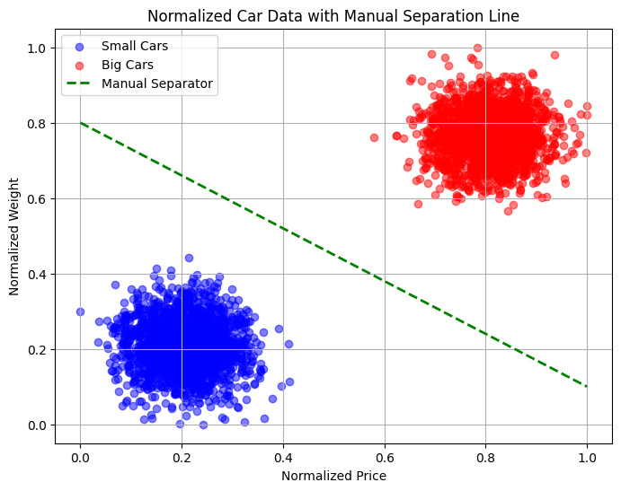

%matplotlib inline
import pandas as pd
import matplotlib.pyplot as plt
# Loading dataset
df = pd.read_csv("groupA.txt", sep=",", header=None, names=["Price", "Weight", "Type"])
# Price and Weight normalizatio
df["Price_norm"] = (df["Price"] - df["Price"].min()) / (df["Price"].max() - df["Price"].min())
df["Weight_norm"] = (df["Weight"] - df["Weight"].min()) / (df["Weight"].max() - df["Weight"].min())
print(df.head())
# visualization
small_cars = df[df["Type"] == 0]
big_cars = df[df["Type"] == 1]
plt.figure(figsize=(8,6))
plt.scatter(small_cars["Price_norm"], small_cars["Weight_norm"], color='blue', label='Small Cars', alpha=0.5)
plt.scatter(big_cars["Price_norm"], big_cars["Weight_norm"], color='red', label='Big Cars', alpha=0.5)
# Manual separation line
x = [0, 1]
y = [0.8, 0.1]
plt.plot(x, y, color='green', linestyle='--', linewidth=2, label='Manual Separator')
plt.xlabel("Normalized Price")
plt.ylabel("Normalized Weight")
plt.title("Normalized Car Data with Manual Separation Line")
plt.legend()
plt.grid(True)
plt.show() Price Weight Type Price_norm Weight_norm
0 23615.75928 61360.78729 1 0.748528 0.727693
1 24310.65894 59815.21582 1 0.852503 0.642088
2 23421.51716 60361.49124 1 0.719464 0.672345
3 24301.90094 61630.95458 1 0.851192 0.742657
4 23907.95918 63305.60879 1 0.792248 0.835412